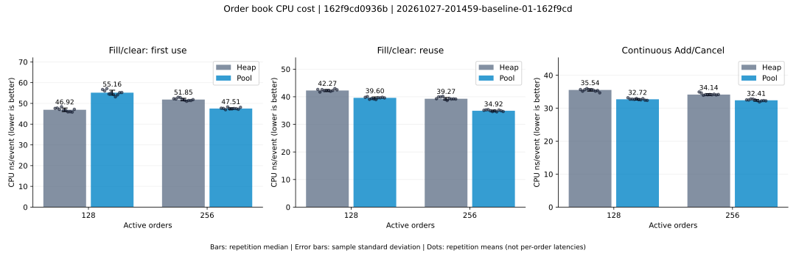
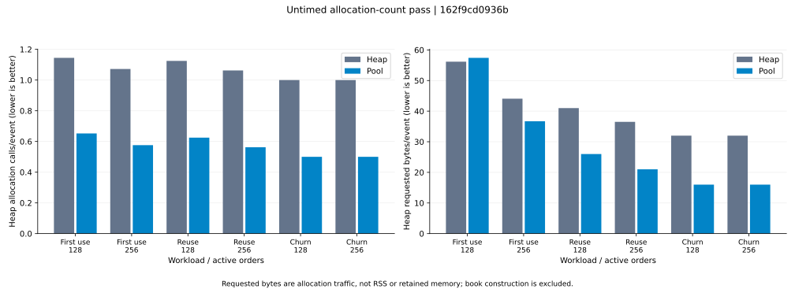

20261027-201459-baseline-01-162f9cd · Commit 162f9cd0936b
AMD Ryzen 3 5300U with Radeon Graphics; c++ (Ubuntu 11.4.0-1ubuntu1~22.04.3) 11.4.0; preset release; logical CPU 2; logging off
| Workload | Orders | Heap ns/event | Pool ns/event | Pool reduction | Heap CV | Pool CV |
|---|---|---|---|---|---|---|
| Fill/clear: first use | 128 | 46.92 | 55.16 | -17.6% | 1.8% | 2.2% |
| Fill/clear: first use | 256 | 51.85 | 47.51 | +8.4% | 1.2% | 0.9% |
| Fill/clear: reuse | 128 | 42.27 | 39.60 | +6.3% | 0.8% | 0.9% |
| Fill/clear: reuse | 256 | 39.27 | 34.92 | +11.1% | 1.2% | 0.8% |
| Continuous Add/Cancel | 128 | 35.54 | 32.72 | +8.0% | 1.0% | 0.8% |
| Continuous Add/Cancel | 256 | 34.14 | 32.41 | +5.1% | 0.9% | 0.8% |

